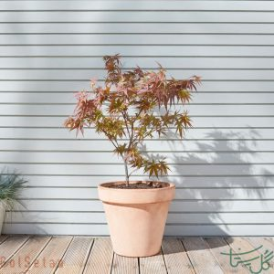

گیاه آپارتمانی گیاهی است که در فضاهای بسته مثلا واحدهای مسکونی و ادارهها نگهداری میشود.
معمولا این گیاهان را با هدف تزیین فضاهای بسته نگهداری میکنند
اما تحقیقات متعددی نشان داده است که نگهداری از گیاهان در خانه، فواید فراوانی برای سلامت روان دارد.
افرای ژاپنی
ببین اول سایه عکس رو با دو تا استایل جدا برای تصویر و تگ اچ دو درست میکنیم بعد دیگه بقیش